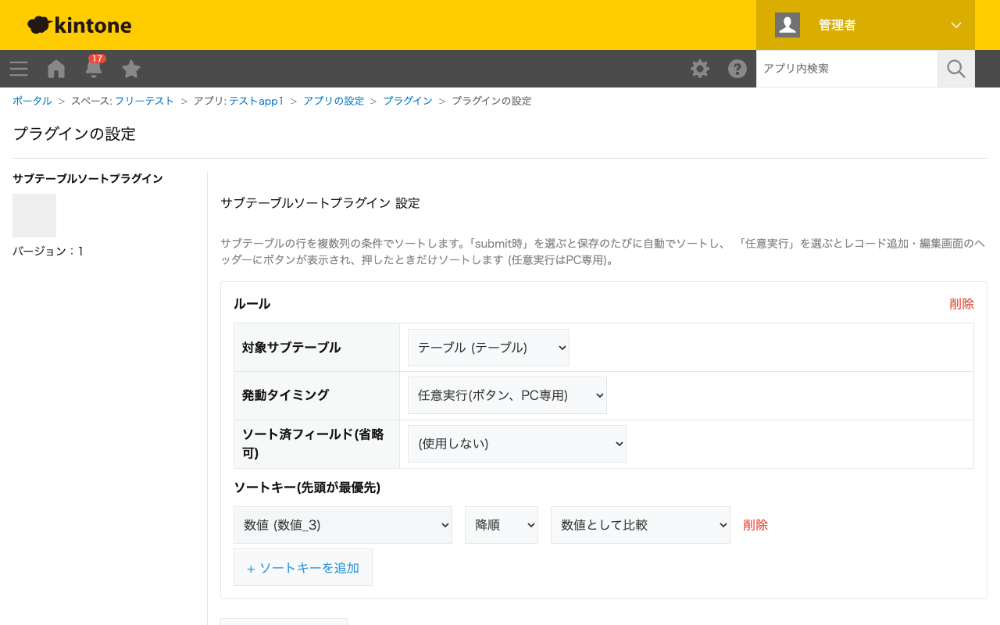

GovAppsプラグイン 安全性を確認できる無料kintoneプラグイン集
サブテーブルの行を、複数列を組み合わせた条件でソートします。「submit時」を選べば保存のたびに自動で ソートし、「任意実行」を選べば追加・編集画面のボタンを押したときだけソートします。ソートキーは複数 設定でき、先頭のキーを最優先に、Excelの複数列ソートと同じ考え方で並び替えます。
作業者が点検結果をサブテーブルに追記していくうちに、入力順がバラバラになりがちです。「submit時」モードで日付列を降順ソートに設定しておくと、保存するたびに最新の記録が常に一番上に整列されます。
ソートキーを複数追加すると、「まず担当者で昇順、同じ担当者内では日付で降順」のような複合条件で並び替えられます。同順位の行は元の順序が保たれる安定ソートなので、意図しない並び替えが起きません。
「任意実行」モードでは追加・編集画面のヘッダーにソート実行ボタンが表示され、押したときだけソートします(PC専用)。ソート済フィールドを設定しておくと、画面表示のたびに「未」にリセットされ、ボタンを押すと「済」に変わるため、ソート済みかどうかが一目でわかります。
「任意実行」モードのボタンはPC画面専用です。モバイルではsubmit時モードのみ動作します。
kintoneセキュアコーディングガイドラインに沿って実装時にチェックしています。特に重要な点は次のとおりです。
kintone.app.record.set()はイベントハンドラー内で使えない制約があるため、submit時モードはevent.recordを直接書き換える方式、任意実行モードはボタンのクリックハンドラー内でのみget()/set()を使う方式に使い分けています。textContentで設定するのみで、ユーザー入力やレコード値を描画に使いません。textContentまたはcreateElementで行っており、innerHTMLへの外部由来文字列の差し込みはありません。詳細な確認項目・確認日は下記GitHubのチェックリストに全項目を掲載しています。

このプラグインはREST APIを一切実行しません。ソート・値の書き換えはすべてJavaScript API
(event.recordの書き換え、またはkintone.app.record.get()/set())のみで完結します。
API実行数制限に影響することはありません。